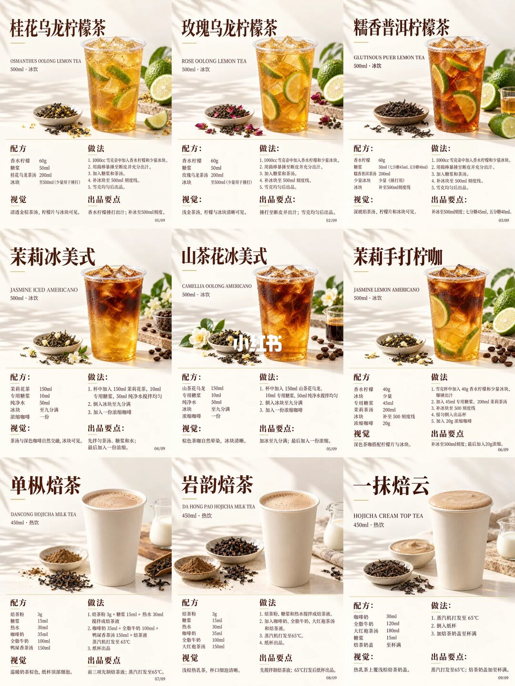
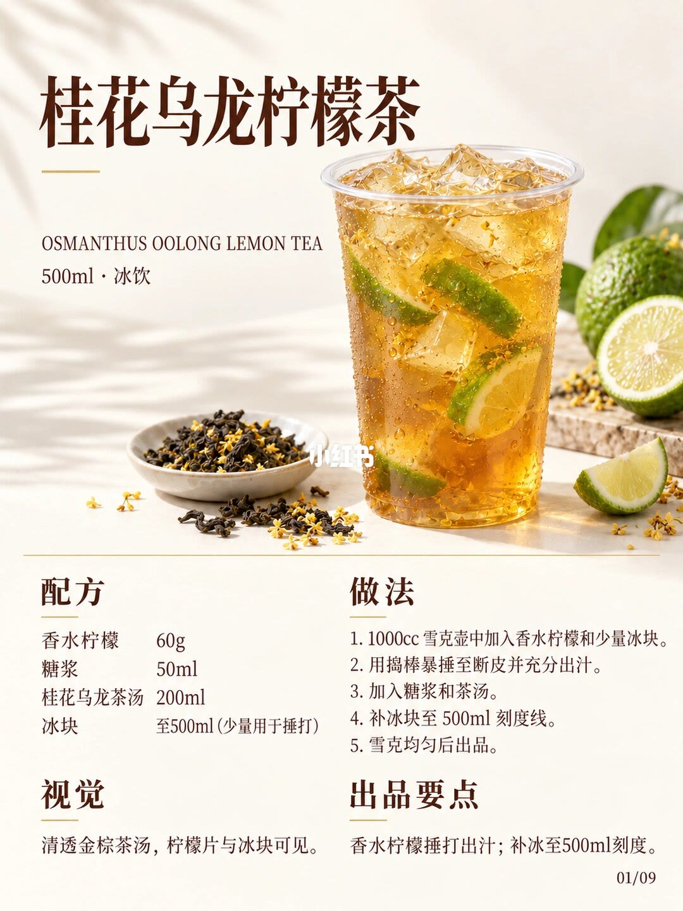
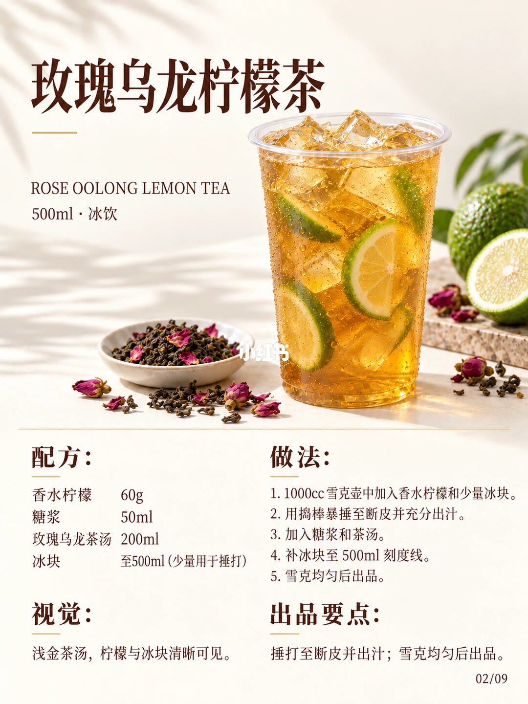
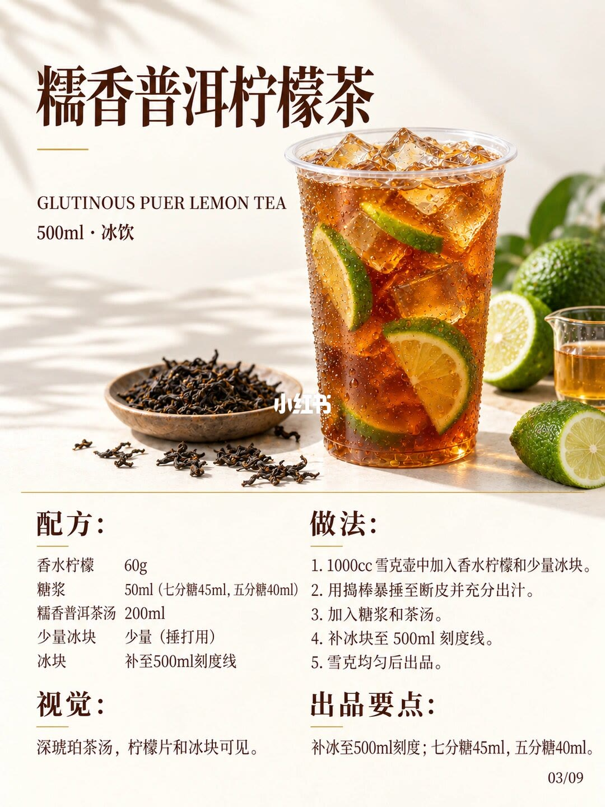
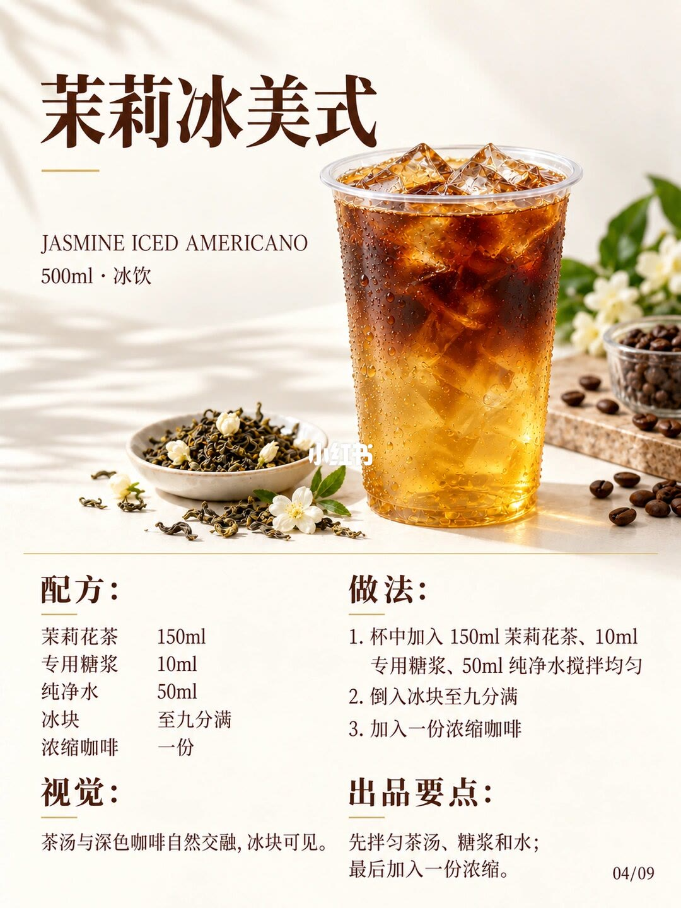
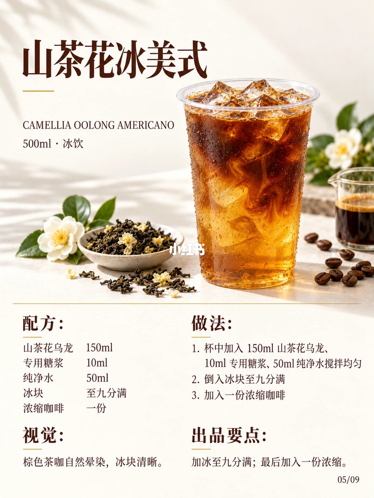
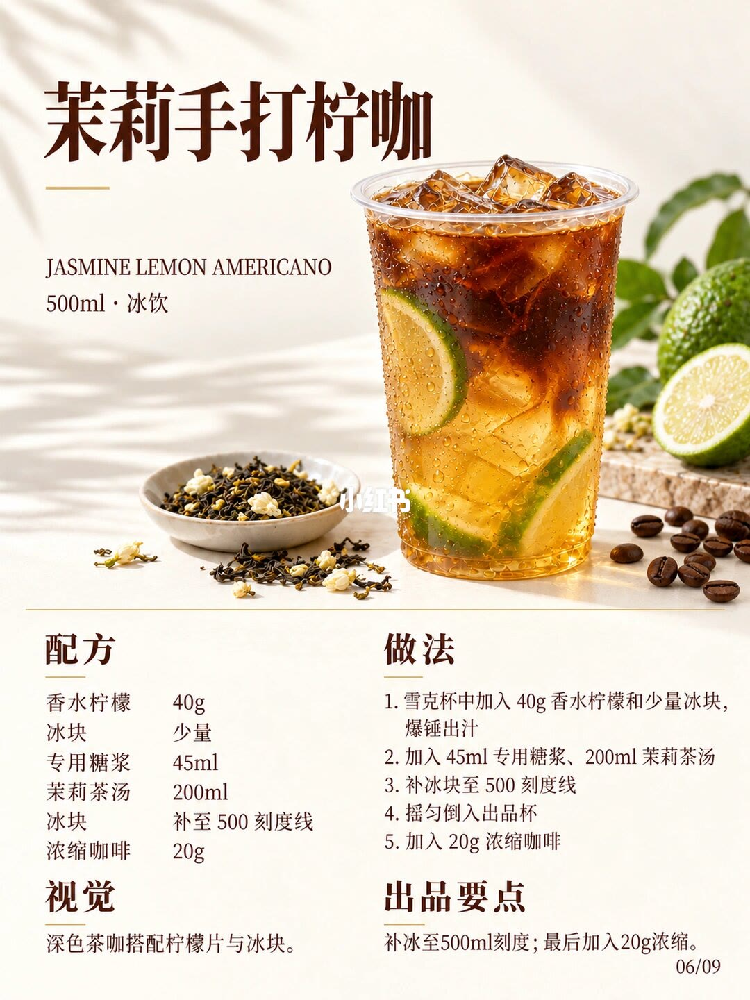
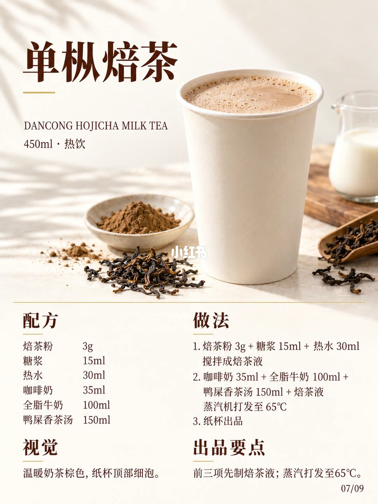
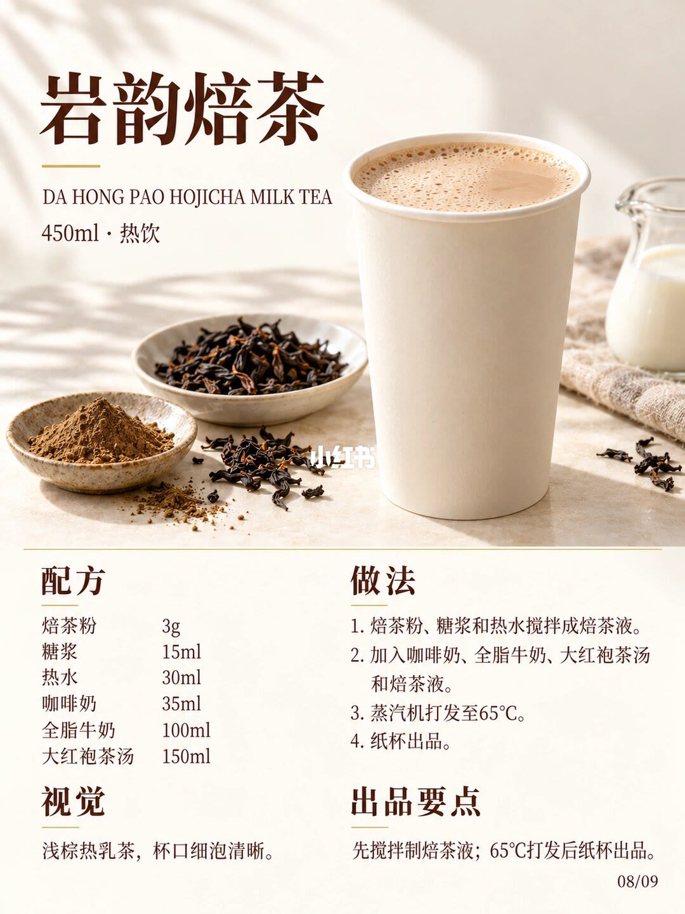
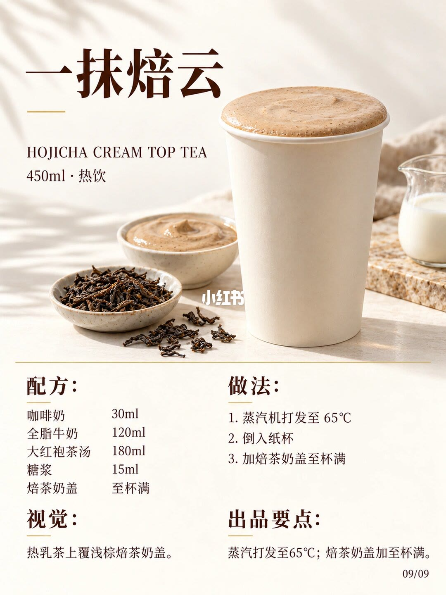

图文实录 · 小红书 · 甄茶笔记&大喜
9款秋日茶香饮｜配方做法
标题写 9 款。图上配方卡也是 9 张，页脚印 01/09 到 09/09；本笔记一共 10 张图，第 1 张是九宫格总览，后面 9 张各展开一款。三张手打柠檬茶共用雪克步骤，只换茶汤；两张冰美式是先拌茶、糖浆和水，加冰到九分满，最后加一份浓缩；两张热焙茶先把焙茶粉、糖浆、热水搅成焙茶液，再和奶、茶汤一起蒸汽到 65℃。茉莉手打柠咖和一抹焙云各自单独一套，不能从邻卡把克数抄过去。
1/10
九宫格把 9 款收在一页
这一页是 3×3 配方卡缩略，不是第 10 款。每格都有中文名、英文名、容量和冷热、成品照片、干茶小图，以及配方、做法、视觉、出品要点。格内页码从 01/09 排到 09/09。
冰饮 500ml 六格：桂花乌龙柠檬茶、玫瑰乌龙柠檬茶、糯香普洱柠檬茶、茉莉冰美式、山茶花冰美式、茉莉手打柠咖。热饮 450ml 三格：单丛焙茶、岩韵焙茶、一抹焙云。缩略字小，具体克数和步骤以第 2 页到第 10 页的单卡为准。单丛这一格的标题，卡片上读作「单丛焙茶」；笔记文案里写作「单枞焙茶」。

2/10
桂花乌龙柠檬茶，卡面 01/09
英文行 OSMANTHUS OOLONG LEMON TEA。规格 500ml · 冰饮。照片是透明杯里的金棕冰茶，杯中有香水柠檬片和冰块，旁边一碟桂花乌龙干茶。
配方：香水柠檬 60g，糖浆 50ml，桂花乌龙茶汤 200ml，冰块至 500ml（少量用于捶打）。
做法：1. 1000cc 雪克壶中加入香水柠檬和少量冰块。2. 用捣棒暴捶至断皮并充分出汁。3. 加入糖浆和茶汤。4. 补冰块至 500ml 刻度线。5. 雪克均匀后出品。
视觉：清透金棕茶汤，柠檬片与冰块可见。出品要点：香水柠檬捶打出汁；补冰至 500ml 刻度。

3/10
玫瑰乌龙柠檬茶，卡面 02/09
英文行 ROSE OOLONG LEMON TEA。规格 500ml · 冰饮。杯中是浅金茶汤、柠檬片和冰块，旁边干茶里能看到玫瑰花蕾。
配方：香水柠檬 60g，糖浆 50ml，玫瑰乌龙茶汤 200ml，冰块至 500ml（少量用于捶打）。
做法与上一张相同：1000cc 雪克壶里放香水柠檬和少量冰块，捣棒暴捶至断皮并充分出汁，加糖浆和茶汤，补冰块至 500ml 刻度线，雪克均匀后出品。
视觉：浅金茶汤，柠檬与冰块清晰可见。出品要点：捶打至断皮并出汁；雪克均匀后出品。

4/10
糯香普洱柠檬茶，卡面 03/09
英文行 GLUTINOUS PUER LEMON TEA。规格 500ml · 冰饮。杯中是深琥珀茶汤，柠檬片和冰块可见，旁边是糯香普洱干茶和香水柠檬。
配方：香水柠檬 60g，糖浆 50ml（七分糖 45ml，五分糖 40ml），糯香普洱茶汤 200ml，少量冰块少量（捶打用），冰块补至 500ml 刻度线。
做法仍是五步：1000cc 雪克壶中加入香水柠檬和少量冰块，暴捶至断皮并充分出汁，加入糖浆和茶汤，补冰块至 500ml 刻度线，雪克均匀后出品。
视觉：深琥珀茶汤，柠檬片和冰块可见。出品要点：补冰至 500ml 刻度；七分糖 45ml，五分糖 40ml。

5/10
茉莉冰美式，卡面 04/09
英文行 JASMINE ICED AMERICANO。规格 500ml · 冰饮。杯中下层是透亮茶汤，上层是深色咖啡往下晕开，冰块可见。旁边是茉莉花茶和咖啡豆。
配方：茉莉花茶 150ml，专用糖浆 10ml，纯净水 50ml，冰块至九分满，浓缩咖啡一份。
做法：1. 杯中加入 150ml 茉莉花茶、10ml 专用糖浆、50ml 纯净水搅拌均匀。2. 倒入冰块至九分满。3. 加入一份浓缩咖啡。
视觉：茶汤与深色咖啡自然交融，冰块可见。出品要点：先拌匀茶汤、糖浆和水；最后加入一份浓缩。

6/10
山茶花冰美式，卡面 05/09
英文行 CAMELLIA OOLONG AMERICANO。规格 500ml · 冰饮。棕色茶咖在杯中晕染，冰块清晰，旁边是山茶花乌龙和咖啡。
配方：山茶花乌龙 150ml，专用糖浆 10ml，纯净水 50ml，冰块至九分满，浓缩咖啡一份。
做法：1. 杯中加入 150ml 山茶花乌龙、10ml 专用糖浆、50ml 纯净水搅拌均匀。2. 倒入冰块至九分满。3. 加入一份浓缩咖啡。
视觉：棕色茶咖自然晕染，冰块清晰。出品要点：加冰至九分满；最后加入一份浓缩。

7/10
茉莉手打柠咖，卡面 06/09
英文行 JASMINE LEMON AMERICANO。规格 500ml · 冰饮。深色茶咖配柠檬片和冰块，旁边有茉莉干茶、咖啡豆和香水柠檬。
配方：香水柠檬 40g，冰块少量，专用糖浆 45ml，茉莉茶汤 200ml，冰块补至 500 刻度线，浓缩咖啡 20g。
做法：1. 雪克杯中加入 40g 香水柠檬和少量冰块，爆捶出汁。2. 加入 45ml 专用糖浆、200ml 茉莉茶汤。3. 补冰块至 500 刻度线。4. 摇匀倒入出品杯。5. 加入 20g 浓缩咖啡。前三张柠檬茶印的是「暴捶」；这一张步骤里的捶字读作爆捶，单字笔画以卡面为准。
视觉：深色茶咖搭配柠檬片与冰块。出品要点：补冰至 500ml 刻度；最后加入 20g 浓缩。

8/10
单丛焙茶，卡面 07/09
英文行 DANCONG HOJICHA MILK TEA。规格 450ml · 热饮。纸杯装着温暖的奶茶棕色，顶部有细泡，旁边是焙茶粉、干茶和牛奶。
配方：焙茶粉 3g，糖浆 15ml，热水 30ml，咖啡奶 35ml，全脂牛奶 100ml，鸭屎香茶汤 150ml。
做法：1. 焙茶粉 3g + 糖浆 15ml + 热水 30ml 搅拌成焙茶液。2. 咖啡奶 35ml + 全脂牛奶 100ml + 鸭屎香茶汤 150ml + 焙茶液，蒸汽机打发至 65℃。3. 纸杯出品。
视觉：温暖奶茶棕色，纸杯顶部细泡。出品要点：前三项先制焙茶液；蒸汽打发至 65℃。

9/10
岩韵焙茶，卡面 08/09
英文行 DA HONG PAO HOJICHA MILK TEA。规格 450ml · 热饮。浅棕热乳茶，杯口细泡清楚，旁边是岩茶干叶、焙茶粉和牛奶。
配方：焙茶粉 3g，糖浆 15ml，热水 30ml，咖啡奶 35ml，全脂牛奶 100ml，大红袍茶汤 150ml。
做法：1. 焙茶粉、糖浆和热水搅拌成焙茶液。2. 加入咖啡奶、全脂牛奶、大红袍茶汤和焙茶液。3. 蒸汽机打发至 65℃。4. 纸杯出品。
视觉：浅棕热乳茶，杯口细泡清晰。出品要点：先搅拌制焙茶液；65℃ 打发后纸杯出品。

10/10
一抹焙云，卡面 09/09
英文行 HOJICHA CREAM TOP TEA。规格 450ml · 热饮。热乳茶上面盖着浅棕焙茶奶盖，旁边有干茶、一碗奶盖和牛奶。
配方：咖啡奶 30ml，全脂牛奶 120ml，大红袍茶汤 180ml，糖浆 15ml，焙茶奶盖至杯满。这张没有印焙茶粉和热水。
做法：1. 蒸汽机打发至 65℃。2. 倒入纸杯。3. 加焙茶奶盖至杯满。第 1 步没有写出是哪几项液体进蒸汽机。
视觉：热乳茶上覆浅棕焙茶奶盖。出品要点：蒸汽打发至 65℃；焙茶奶盖加至杯满。

汇总
九款是五套骨架，换茶底之前先对容量
结论
图上是 9 款，不是 10 款。手打柠檬茶三款（实录 2/10–4/10）柠檬都是 60g、糖浆默认 50ml、茶汤 200ml、补冰到 500ml。冰美式两款（5/10–6/10）茶 150ml、专用糖浆 10ml、水 50ml、冰到九分满、浓缩一份且最后加。热焙茶两款（8/10–9/10）先做焙茶液，再蒸汽到 65℃，茶汤都是 150ml。茉莉手打柠咖（7/10）柠檬是 40g、浓缩是 20g。一抹焙云（10/10）咖啡奶 30ml、牛奶 120ml、大红袍 180ml，再加焙茶奶盖至杯满。
支撑页
总览在 1/10。桂花、玫瑰、糯香普洱三张柠檬茶在 2/10–4/10，减糖只印在 4/10。茉莉冰美式、山茶花冰美式在 5/10–6/10。茉莉手打柠咖在 7/10。单丛焙茶、岩韵焙茶在 8/10–9/10。一抹焙云在 10/10。
边界
茶汤怎么泡、叶子多少克、浸泡时间和水温，十页都没印。专用糖浆和糖浆差在哪、咖啡奶是什么、一份浓缩是多少克、焙茶奶盖怎么做，都没有写。65℃ 没有时长。七分糖、五分糖只出现在糯香普洱这一张。第 10 页蒸汽步骤没有点名入壶的液体。捶打写到断皮出汁为止，没有写捶几下。